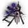
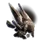
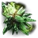
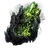
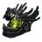
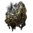
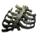

Path of Exile 2 crafting recipes, flowcharts and a crafting emulator
A service that grows with Path of Exile 2 players. Every recipe, reverse craft and report sharpens the numbers.

Reviews, requests and bug reports from players go straight into the next recipes and features.



Each new recipe, reverse craft and correction refines the odds, costs and step order for everyone.
Odds come from the game's modifier weights and tens of thousands of simulated runs. Unknown weights are marked as unknown.



Real crafts from videos and posts, split into high-end, balanced and essential grades so every budget has a path.
Every message is read and fed into the next update.